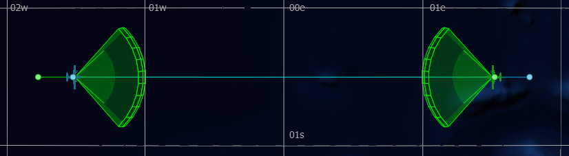

Sensors and Signatures¶
A sensor is a platform part which provides the owning platform the means to detect other platforms and/or their integral parts.
A signature is a platform attribute used to determine weather a given sensor is able to detect the signature’s owning platform.
Below is a list of platform signature attributes used to detect platforms:
|
|
|
|
Options are available for signal propagation, extinction, clutter and errors in AFSIM, and sensors support the use of transmitters, receivers, and antennas to provide higher fidelity modeling and simulation; however, these are advanced topics and are not discussed in detail in this guide.
The following list includes some predefined sensor models:
|
|
|
|
Quick Start¶
When modeling aircraft, it is likely that a radar signature is most important for general modeling purposes. With a defined radar signature, an aircraft may be detected by a radar sensor.
To define a radar signature, add the following signature command block to the scenario file at the global scope (not within a platform, platform type, or other block command). Naming in this example follows with earlier examples in this guide:
radar_signature CARGO_AIRCRAFT_RADAR_SIG
constant 10 m^2
end_radar_signature
Then provide this signature attribute to the associated platform type definition:
platform_type CARGO_AIRCRAFT WSF_PLATFORM
...
radar_signature CARGO_AIRCRAFT_RADAR_SIG
end_platform_type
All platforms inheriting this type may now be detected by radar sensors. With that, a simplified radar sensor may be defined by adding the following sensor command block to an existing platform or platform type definition. Alternatively, the sensor may be defined independently and added to a given platform or platform type as needed.
sensor AIR_RADAR WSF_GEOMETRIC_SENSOR
frame_time 5 sec
maximum_range 30 nm
reports_location
reports_bearing
on
end_sensor
Note
The WSF_GEOMETRIC_SENSOR is used in this example for simplicity, as it is a cross-domain sensor model based purely on geometry. To implement a higher fidelity radar, see WSF_RADAR_SENSOR.
Closer Look¶
Sensors vary widely in their capability, but generally, they identify the existence of a platform. Intuitive examples of sensors include human eyes, which may be modeled as a WSF_OPTICAL_SENSOR or human ears, which may be modeled as a WSF_ACOUSTIC_SENSOR. However, these sensors are of little value if detection targets have undefined detectability. This is where signatures come in. Signatures define the, “detectability” of a given platform or platform part within the associated domain. The WSF_OPTICAL_SIGNATURE of a building defines the way light is reflected off of the building, in such a way as it may be detected (or seen) by a WSF_OPTICAL_SENSOR. Similarly, the WSF_ACOUSTIC_SIGNATURE of an aircraft defines the frequency and the energy (loudness) of the noise created by that aircraft, such that it may detected (or heard) by a WSF_ACOUSTIC_SENSOR. Different sensor/signature pairs each fall into a domain, describing a platforms detectability, and a sensors ability to detect within the respective domain.
Note
The following steps assume that the “simple_flight” scenario is present as discussed in Movers and Routes.
Adding a Radar Signature¶
As described in Quick Start, a radar signature may be defined in simple_flight by adding the following radar_signature command block in the simple_flight.txt script:
radar_signature CARGO_AIRCRAFT_RADAR_SIG
constant 10 m^2
end_radar_signature
Tip
This is a simple, spherical radar signature, provided for capability demonstration. More complex/accurate signatures may be defined using other commands available within the radar_signature command block.
To associate this radar signature with CARGO_AIRCRAFT include the following code in the associated platform type definition:
radar_signature CARGO_AIRCRAFT_RADAR_SIG
Adding a Radar¶
A radar is a type of sensor, another fundamental platform part critical to AFSIM simulations. Additional sub-commands may be included in the sensor definition which affect the sensor’s properties, including its field of view, the information it reports about a detected entity, and its range. These will be important to prevent a collision between the two aircraft in the simple_flight scenario.
With the addition of a radar, it now becomes important that the two aircraft are assigned to different teams/sides, to ensure expected behavior in upcoming modules.
Add the following team colors to the platform definitions of cargo-1 and cargo-2 (This may be completed in Wizard’s Platform Details if a platform is selected in the Map Display):
platform cargo-1 CARGO_AIRCRAFT ... side blue end_platform platform cargo-2 CARGO_AIRCRAFT ... side green end_platform
Next, add the following sensor definition to the CARGO_AIRCRAFT platform type definition (This may be completed from Platform Browser > Right-Click > Manage Platform Parts if the sensor is defined independently) and save the file:
sensor AIR_RADAR WSF_GEOMETRIC_SENSOR frame_time 3 sec maximum_range 50 nm reports_location reports_bearing reports_side reports_velocity azimuth_field_of_view -45.0 deg 45.0 deg elevation_field_of_view -15.0 deg 15.0 deg on end_sensor
With this addition, the two aircraft will sense (and create tracks for) each other when their distances close to below the maximum_range specified for the sensor.
Warlock’s Map Display should reflect the following at simulation start (Sensor Volumes and Routes visibility may be displayed via Warlock’s Platform Options widget):
Review¶
After completing this module, the simple_flight project should include a single scenario file, simple_flight.txt that reflects the following:
# simple_flight demo
simulation_name "Simple Flight"
execute at_time 0.1 sec absolute
writeln("\nSimulating simple_flight scenario...");
end_execute
end_time 30 min
radar_signature CARGO_AIRCRAFT_RADAR_SIG
constant 10 m^2
end_radar_signature
platform_type CARGO_AIRCRAFT WSF_PLATFORM
icon c130
spatial_domain air
category cargo
mover WSF_AIR_MOVER
update_interval 3 sec
end_mover
radar_signature CARGO_AIRCRAFT_RADAR_SIG
sensor AIR_RADAR WSF_GEOMETRIC_SENSOR
frame_time 5 sec
maximum_range 30 nm
reports_location
azimuth_field_of_view -45.0 deg 45.0 deg
elevation_field_of_view -15.0 deg 15.0 deg
ignore_same_side
on
end_sensor
end_platform_type
platform cargo-1 CARGO_AIRCRAFT
side blue
heading 90 deg
altitude 8000 m
route
position 00:30s 01:30w altitude 8000 m speed 500 km/h
position 00:30s 01:45e
end_route
end_platform
platform cargo-2 CARGO_AIRCRAFT
side green
heading -90 deg
altitude 8000 m
route
position 00:30s 01:30e altitude 8000 m speed 500 kmh
position 00:30s 01:45w
end_route
end_platform
Note
As the simple_flight scenario becomes more complex, reorganization of the project becomes more valuable. Subsequent modules will include separation of the single startup file into multiple resource files. Instead of adding code directly to the startup file for upcoming modules, contents will be added to new files or appropriate existing resource files.
Summary¶
A sensor is able to produce tracks for domain specific signatures that it perceives. Signatures define the detectability of a given platform within a given domain. Tracks are key to the automatic response of a platform in decision making when they are passed to processors for interpretation. Tracks and processors are discussed in upcoming modules.